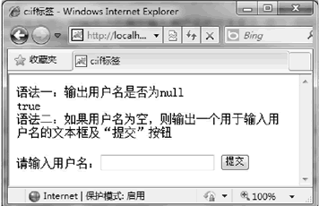

首页 > 编程笔记
JSP JSTL <c:if>标签：条件判断标签
该标签可以根据不同的条件处理不同的业务，也就是执行不同的程序代码。它和 Java 基础中if语句的功能一样。<c:if> 标签有两种语法格式。
参数说明：
输入用户名后，单击“提交”按钮，运行结果如下：
代码中的方法根据 action 参数的值来达到显示不同星期的提示信息。action 为 sun（周日）时，在 URL 地址栏添加表达式 "?action=sun" 为周日的提示信息。
把判断的条件写在 test 的属性中，为（param.action=='星期几？'），关键代码如下：
周二了：工作两天了，要适当补充体力哦
语法
语法格式一：
<c:if test="condition" var="name"[scope=page|request|session|application]/>
判断条件表达式，并将条件的判断结果保存在 var 属性指定的变量中，而这个变量存在于 scope 属性所指定范围中。语法格式二：
<c:if test="condition" var="name"[scope=page|request|session|application]>
标签体
</c:if>
参数说明：
- <c:if> 标签各属性的详细介绍如表所示。
| 属性 | 类型 | 描述 | 引用 EL |
|---|---|---|---|
| test | boolean | 条件表达式：这是<c:if>标签必须定义的属性 | 可以 |
| var | String | 指定变量名：这个属性会指定test属性的判断结果将存放在哪个变量中，如果该变量不存在，就创建它 | 不可以 |
| scope | String | 存储范围，该属性用于指定var属性所制定的变量的存在范围 | 不可以 |
示例
应用 <c:if> 标签判断用户名是否为 null，如果为空则显示一个用于输入用户名的文本框及“提交”按钮。
<%@taglib prefix="c" uri="http://java.sun.com/jsp/jstl/core"%>
语法一:输出用户名是否为null<br>
<c:if test="${param.user==null}" var="rtn" scope="page"/>
<c:out value="${rtn}"/>
<br>语法二:如果用户名为空，则输出一个用于输入用户名的文本框及“提交”按钮<br>
<c:if test="${param.user==null}">
<form action="" method="post">
请输入用户名:<input type="text" name="user">
<input type="submit" value="提交">
</form>
</c:if>
运行本程序，当用户名为空时，将显示图所示的运行结果。

输入用户名后，单击“提交”按钮，运行结果如下：
语法一：输出用户名是否为 null
false
语法二：如果用户名为空，则输出一个用于输入用户名的文本框及“提交”按钮
典型应用
本示例应用 <c:if> 标签实现根据参数请求显示不同页面的功能。在页面中将根据 <c:if> 标签判断并显示不同的提示信息。代码中的方法根据 action 参数的值来达到显示不同星期的提示信息。action 为 sun（周日）时，在 URL 地址栏添加表达式 "?action=sun" 为周日的提示信息。
把判断的条件写在 test 的属性中，为（param.action=='星期几？'），关键代码如下：
<fieldset>
<c:if test="${param.action=='mon'}">
周一了:工作的第一天，要加油哦
</c:if>
<c:if test="${param.action=='tues'}">
周二了:工作两天了，要适当补充体力哦
</c:if>
<c:if test="${param.action=='wed'}">
周三了:忙碌的生活要学会调节
</c:if>
<c:if test="${param.action=='thu'}">
周四了:偶尔偷下懒儿，不算过分哦
</c:if>
<c:if test="${param.action=='fri'}">
周五了:加油明天就要休息了，HOHO
</c:if>
<c:if test="${param.action=='sat'}">
周六了:和死党们出去HAPPY吧
</c:if>
<c:if test="${param.action=='sun'}">
周日:要收敛一下活动，明个要上班呢
</c:if>
</fieldset>
运行结果如下：周二了：工作两天了，要适当补充体力哦
关注公众号「站长严长生」，在手机上阅读所有教程，随时随地都能学习。内含一款搜索神器，免费下载全网书籍和视频。

微信扫码关注公众号